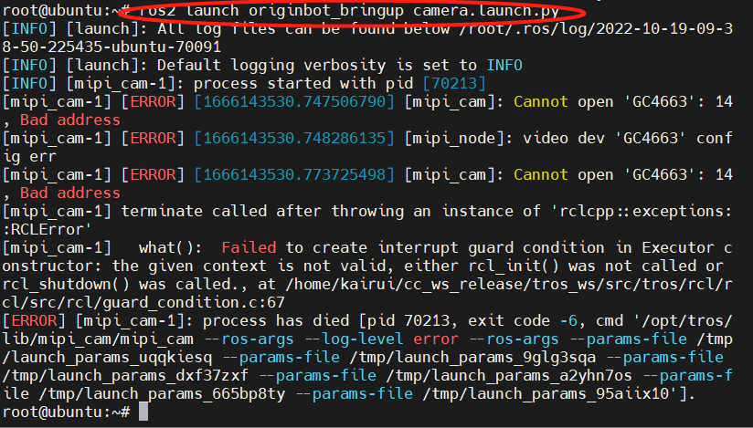

相机驱动与图像可视化
Hint
操作环境及软硬件配置如下：
- OriginBot机器人（Lite版/标准版/Pro版）
- PC：Ubuntu (≥22.04) + ROS2 (≥humble)
相机驱动例程
在OriginBot的系统镜像中，已经内置了相机的驱动程序，为了确定相机连接正确并且被系统识别，我们先来运行系统自带的相机例程。
启动相机例程
SSH连接OriginBot成功后，在终端中输入如下指令：

Info
在2.x版本中，已实现系统通过I2C自动识别相机型号，可自由在F37、GC4663等型号切换设备。

上位机查看例程效果
运行成功后，在同一网络的PC端，打开浏览器，输入 http://IP:8000，选择“web展示端”，即可查看图像和算法效果，IP为OriginBot的IP地址。

如相机被顺利驱动，我们不仅可以看到实时图像，还可以看到一个人体骨骼点识别的示例，说明相机运行正常。

关闭例程
该例程运行完毕后，请使用Ctrl+C关闭终端中运行的launch文件，释放摄像头硬件资源，便于后续例程使用，否则可能会出现相机设备无法找到的问题：

ROS图像传输
确认之前的相机例程已经关闭，接下来可以测试ROS2环境下的图像订阅与发布。
启动ROS相机驱动
SSH连接OriginBot成功后，在终端中输入如下指令：
export RMW_IMPLEMENTATION=rmw_cyclonedds_cpp
export CYCLONEDDS_URI='<CycloneDDS><Domain><General><NetworkInterfaceAddress>wlan0</NetworkInterfaceAddress></General></Domain></CycloneDDS>'
ros2 launch originbot_bringup camera.launch.py

Info
为了保证图像的实时性，这里我们将使用的DDS切换为cyclonedds，避免因为DDS的切片，导致图像延迟。cyclonedds默认会绑定某一网卡进行数据传输，此处我们使用第二句命令指定无线网卡wlan0作为绑定官网卡，大家可以根据实际情况，进行切换。更多信息，也可以参考DDS的配置。
查看相机话题
运行成功后，可在机器人端或同网络下的PC端使用如下命令，确认图像话题已经正常发布。

查看可视化图像
在同一网络中的PC端，同样配置好使用的DDS，再使用rqt_image_view工具，就可以看到机器人的实时相机图像了。
export RMW_IMPLEMENTATION=rmw_cyclonedds_cpp
export CYCLONEDDS_URI='<CycloneDDS><Domain><General><NetworkInterfaceAddress>ens33</NetworkInterfaceAddress></General></Domain></CycloneDDS>'
ros2 run rqt_image_view rqt_image_view

Info
此处我们使用第二句命令指定无线网卡ens33作为绑定官网卡，该名称和电脑系统相关，可以使用ifconfig查询，大家可以根据实际情况，进行切换。更多信息，也可以参考DDS的配置。

附：DDS的配置
ROS2 Foxy默认使用的是fastdds，在图像传输的场景下，会受到限制，此时我们可以切换为cyclonedds。
DDS的安装
cyclonedds在OriginBot的镜像中已经配置好，如果想在电脑端配置的话，可以使用如下命令安装：
DDS的切换
在运行指令的终端中，使用如下指令设置DDS的环境变量，即可切换当前终端所使用的DDS：
cyclonedds默认会绑定某一网卡进行数据传输，如果需要切换绑定的网卡，可以继续在该终端中输入：
export CYCLONEDDS_URI='<CycloneDDS><Domain><General><NetworkInterfaceAddress>wlan0</NetworkInterfaceAddress></General></Domain></CycloneDDS>'
Hint
中间的参数就是绑定网卡的名字，按照实际需要，修改为eth0、wlan0，或者实际的网卡设备号。参考链接：http://www.robotandchisel.com/2020/08/12/cyclonedds/
使用如下指令，可以查看当前终端的所使用的DDS是否切换成功：

确定切换成功后，即可在当前终端中运行发布数据的节点了，比如相机发布者节点：
在运行的终端中，可以看到当前fastdds所绑定发布数据的网卡。